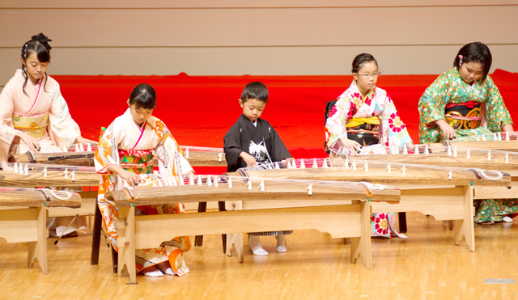
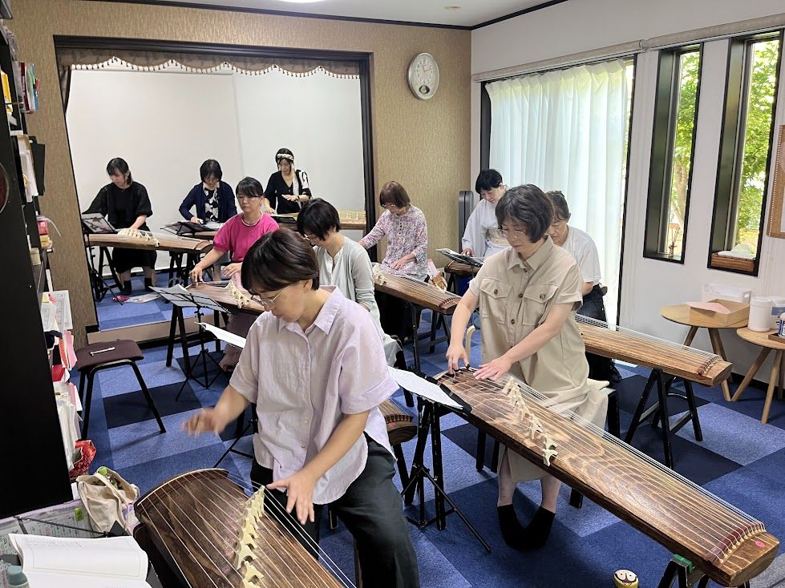

For You
Who Is It For
こんな方を歓迎しています

For Kids
お子さま
情操教育や和の文化にふれる習い事として。発表会や子ども琴三味線合奏団もあり、楽しく続けられます。送り迎えしやすい立地です。

For Beginners
大人の初心者
「楽譜が読めない」「未経験」でも大丈夫。一人ひとりのペースに合わせて、基礎から丁寧にお教えします。趣味として無理なく続けられます。

No Instrument?
楽器をお持ちでない方
教室の楽器を使って始められます。まずは続けられそうか、体験レッスンでお試しを。ご購入のご相談もお気軽にどうぞ。